W10. Conic Sections, Circles, Ellipses, Parabolas, Hyperbolas, Second Degree Equations, Rotation of Axes
1. Summary
1.1 Cones and Conic Sections
1.1.1 The Cone
A cone is a three-dimensional geometric shape formed by a set of line segments connecting a common point, called the apex or vertex, to all the points on a flat base. For the purpose of conic sections, we consider a double-napped cone, which looks like two identical cones joined at their vertices. This shape is generated by rotating a straight line around a fixed axis line, where the rotating line intersects the axis.
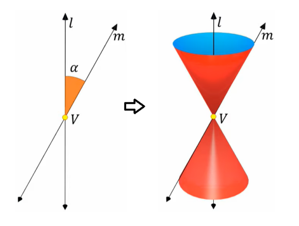
1.1.2 Conic Sections
Conic sections are the curves you get when you intersect a plane with a double-napped cone. The type of curve—a circle, ellipse, parabola, or hyperbola—depends on the angle of the plane relative to the cone’s axis. In some special cases, called degenerate conics, the intersection can be a point, a line, or a pair of intersecting lines.
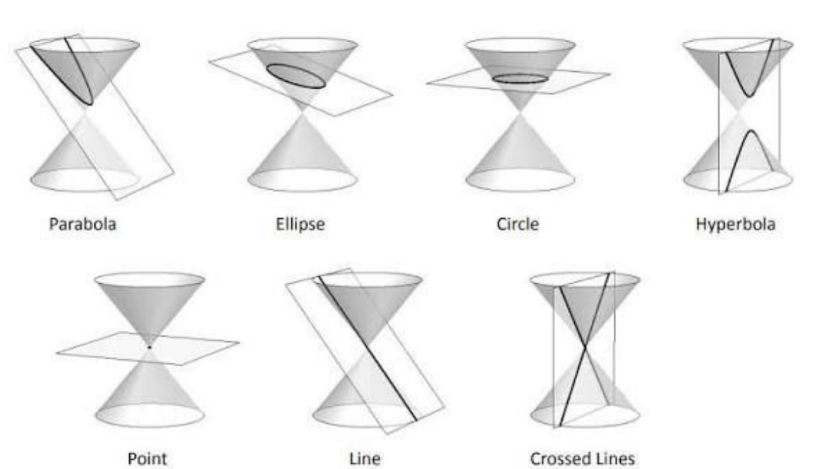
1.2 The Circle
1.2.1 Definition and Equations
A circle is defined as the set of all points in a plane that are at a fixed distance from a central point. This fixed distance is called the radius (\(r\)), and the central point is the center (\((h, k)\)).
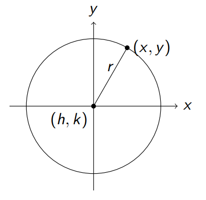
The relationship between the center, radius, and any point \((x, y)\) on the circle is derived from the distance formula.
- The Standard Equation of a circle is: \[ (x - h)^2 + (y - k)^2 = r^2 \]
- The General Form of a circle’s equation is obtained by expanding the standard form: \[ x^2 + y^2 + Dx + Ey + F = 0 \] where \(D = -2h\), \(E = -2k\), and \(F = h^2 + k^2 - r^2\).
1.2.2 Examples
- Finding the Equation Given Center and Radius: To find the equation of a circle with center at \((2, -3)\) and a radius of \(5\), we plug these values into the standard form: \[ (x - 2)^2 + (y - (-3))^2 = 5^2 \] \[ (x - 2)^2 + (y + 3)^2 = 25 \] Expanding this gives the general form: \[ x^2 - 4x + 4 + y^2 + 6y + 9 = 25 \] \[ x^2 + y^2 - 4x + 6y - 12 = 0 \]
- Finding Center and Radius from the General Equation: To find the center and radius of the circle given by \(x^2 + y^2 - 6x + 8y - 11 = 0\), we use a method called completing the square.
- Group the \(x\) and \(y\) terms: \((x^2 - 6x) + (y^2 + 8y) = 11\).
- Complete the square for each variable: \((x^2 - 6x + 9) + (y^2 + 8y + 16) = 11 + 9 + 16\).
- Rewrite in standard form: \((x - 3)^2 + (y + 4)^2 = 36\). From this, we can see the center is \((3, -4)\) and the radius is \(\sqrt{36} = 6\).
- Finding the Equation from Three Points: To find the equation of a circle passing through \((1, 2)\), \((2, 4)\), and \((-1, 1)\), we can substitute these points into the general equation \(x^2 + y^2 + Dx + Ey + F = 0\) to create a system of three linear equations with variables \(D\), \(E\), and \(F\). Solving this system will give the coefficients for the circle’s equation. Note: Not all sets of three points can form a circle. For example, if the points lie on a straight line (are collinear), like \((1,2)\), \((3,4)\), and \((5,6)\), they cannot define a circle.
1.3 The Ellipse
1.3.1 Definition and Equation
An ellipse is the set of all points in a plane where the sum of the distances from two fixed points, called the foci (singular: focus), is constant.
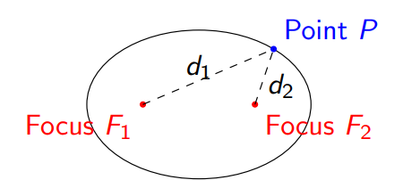
- The Standard Equation of an ellipse centered at \((h, k)\) depends on its orientation:
- Horizontal Major Axis: The ellipse is wider than it is tall. \[ \frac{(x - h)^2}{a^2} + \frac{(y - k)^2}{b^2} = 1 \]
- Vertical Major Axis: The ellipse is taller than it is wide. \[ \frac{(x - h)^2}{b^2} + \frac{(y - k)^2}{a^2} = 1 \]
- Key Parameters:
- \(a\) is the semi-major axis (half the length of the longest diameter).
- \(b\) is the semi-minor axis (half the length of the shortest diameter).
- By definition, \(a > b > 0\). The larger denominator always corresponds to \(a^2\).
- \(c\) is the distance from the center to each focus, and it is related to \(a\) and \(b\) by the formula: \(c^2 = a^2 - b^2\).
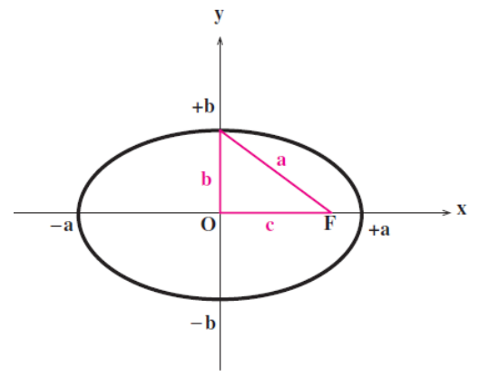
1.3.2 Orientation
The orientation of an ellipse is determined by the denominator of the \(x\) and \(y\) terms in its standard equation.
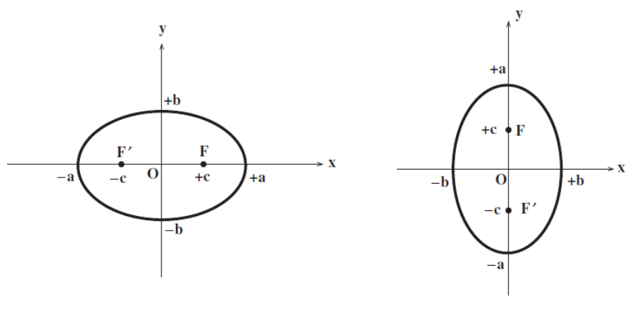
- Key Rule: The larger denominator determines the direction of the major axis.
- If the larger denominator (\(a^2\)) is under the \((x-h)^2\) term, the major axis is horizontal.
- If the larger denominator (\(a^2\)) is under the \((y-k)^2\) term, the major axis is vertical.
1.3.3 Eccentricity
The eccentricity (\(e\)) of an ellipse is a measure of how “stretched out” or non-circular it is. It is defined as the ratio of the distance from the center to a focus (\(c\)) to the length of the semi-major axis (\(a\)).
- Formula: \[ e = \frac{c}{a} \]
- Range of Eccentricity: For any ellipse, the eccentricity is always between 0 and 1 (\(0 \le e < 1\)).
- If \(e = 0\), the foci are at the center (\(c=0\)), and the ellipse is a perfect circle.
- As \(e\) approaches 1, the foci move farther from the center, and the ellipse becomes more elongated or flattened.
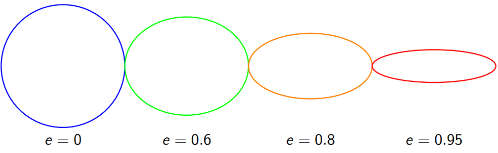
1.4 The Parabola
1.4.1 Definition and Equation
A parabola is the set of all points in a plane that are equidistant from a fixed point (the focus) and a fixed line (the directrix). The vertex of the parabola is the point on the parabola that is halfway between the focus and the directrix.
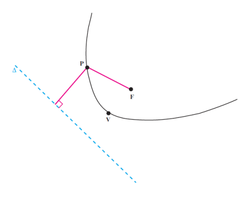
- The Standard Equation of a parabola with vertex \((h, k)\) depends on its orientation:
- Vertical Axis of Symmetry: Opens upward or downward. \[ (x - h)^2 = 4a(y - k) \]
- Opens upward if \(a > 0\).
- Opens downward if \(a < 0\).
- Focus: \((h, k + a)\)
- Directrix: \(y = k - a\)
- Horizontal Axis of Symmetry: Opens right or left. \[ (y - k)^2 = 4a(x - h) \]
- Opens right if \(a > 0\).
- Opens left if \(a < 0\).
- Focus: \((h + a, k)\)
- Directrix: \(x = h - a\)
- Vertical Axis of Symmetry: Opens upward or downward. \[ (x - h)^2 = 4a(y - k) \]
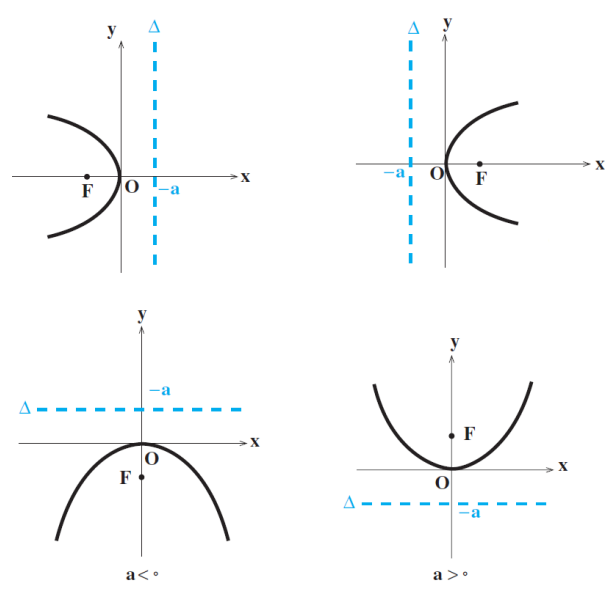
- Key Parameter: The value \(a\) represents the directed distance from the vertex to the focus.
1.4.2 Converting Between Forms
Just like with circles, you can convert a parabola’s equation between its standard and general forms.
- Standard to General: Expand the squared term and move all terms to one side. For example, \((x - 2)^2 = 8(y - 1)\) becomes \(x^2 - 4x + 4 = 8y - 8\), which simplifies to \(x^2 - 4x - 8y + 12 = 0\).
- General to Standard: Use completing the square. For example, to convert \(y^2 + 4y + 8x - 4 = 0\), first isolate the squared variable terms: \(y^2 + 4y = -8x + 4\). Then complete the square: \(y^2 + 4y + 4 = -8x + 4 + 4\), which simplifies to \((y + 2)^2 = -8x + 8\). Finally, factor out the coefficient of the non-squared variable: \((y + 2)^2 = -8(x - 1)\).
1.5 The Hyperbola
1.5.1 Definition and Equation
A hyperbola is the set of all points in a plane where the absolute difference of the distances from two fixed points (the foci) is constant. A hyperbola consists of two separate curves called branches. The line segment connecting the vertices is the transverse axis.
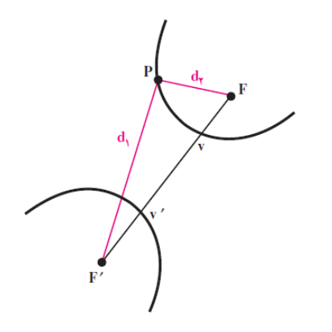
- The Standard Equation of a hyperbola centered at \((h, k)\) depends on its orientation:
- Horizontal Transverse Axis: Branches open left and right. \[ \frac{(x - h)^2}{a^2} - \frac{(y - k)^2}{b^2} = 1 \]
- Vertical Transverse Axis: Branches open up and down. \[ \frac{(y - k)^2}{a^2} - \frac{(x - h)^2}{b^2} = 1 \]
- Key Parameters:
- \(a\) is the distance from the center to each vertex.
- \(b\) is related to the conjugate axis.
- \(a^2\) is always under the positive term.
- \(c\) is the distance from the center to each focus, related by the formula: \(c^2 = a^2 + b^2\).
1.5.2 Asymptotes
Hyperbolas have two asymptotes, which are lines that the branches of the hyperbola approach but never touch. These asymptotes intersect at the center of the hyperbola and form a “fundamental rectangle” that helps in sketching the graph. The rectangle is centered at \((h, k)\) with width \(2a\) and height \(2b\) (for a horizontal hyperbola) or width \(2b\) and height \(2a\) (for a vertical hyperbola). The asymptotes are the diagonals of this rectangle.
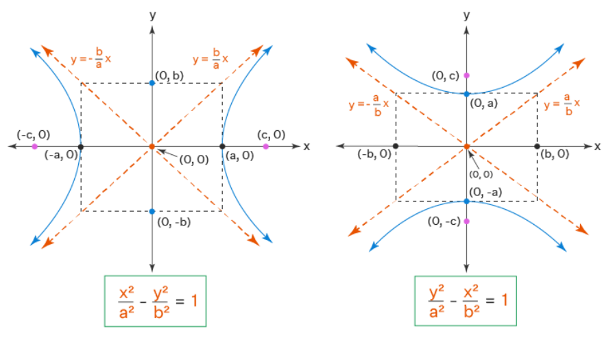
- Asymptote Equations:
- For a horizontal hyperbola: \(y - k = \pm \frac{b}{a}(x - h)\)
- For a vertical hyperbola: \(y - k = \pm \frac{a}{b}(x - h)\)
1.5.3 Eccentricity
The eccentricity (\(e\)) of a hyperbola measures the “spread” of its branches. Like the ellipse, it is defined as the ratio of \(c\) to \(a\).
- Formula: \[ e = \frac{c}{a} \]
- Range of Eccentricity: For any hyperbola, the eccentricity is always greater than 1 (\(e > 1\)).
- As \(e\) approaches 1, the branches become very narrow.
- As \(e\) increases, the branches become flatter and more open.
1.6 General Second-Degree Equations and Rotation of Axes
1.6.1 The General Equation
All conic sections can be described by a general second-degree equation of the form: \[ Ax^2 + Bxy + Cy^2 + Dx + Ey + F = 0 \] The term \(Bxy\) indicates that the conic section is rotated and its axes are not parallel to the x and y axes.
1.6.2 The Discriminant
You can determine the type of conic section from the general equation without graphing it by using the discriminant (\(\Delta = B^2 - 4AC\)).
- If \(\Delta < 0\), the conic is an ellipse (or a circle if \(A=C\) and \(B=0\)).
- If \(\Delta = 0\), the conic is a parabola.
- If \(\Delta > 0\), the conic is a hyperbola.
- Example: For \(3x^2 - 2xy + 3y^2 - 6x + 4y - 1 = 0\), we have \(A=3\), \(B=-2\), and \(C=3\). The discriminant is \(\Delta = (-2)^2 - 4(3)(3) = 4 - 36 = -32\). Since \(-32 < 0\), the conic is an ellipse.
1.6.3 Rotation of Axes
To analyze a conic section that has an \(xy\) term, we can rotate the coordinate axes to align with the conic’s axes. This eliminates the \(xy\) term, resulting in a simpler equation in a new coordinate system (\(x'\), \(y'\)).
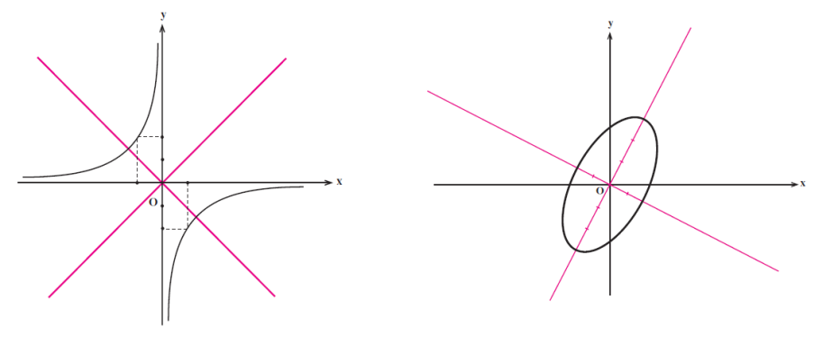
The angle of rotation, \(\theta\), required to eliminate the \(Bxy\) term is given by: \[ \cot(2\theta) = \frac{A - C}{B} \quad \text{or} \quad \tan(2\theta) = \frac{B}{A - C} \]
After finding the angle \(\theta\), we substitute the rotation formulas into the original equation:
- \(x = x' \cos\theta - y' \sin\theta\)
- \(y = x' \sin\theta + y' \cos\theta\)
This process transforms the general equation into a standard form in the \(x'y'\) coordinate system, allowing for easier analysis.
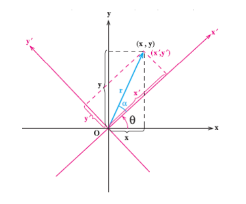
1.7 Coordinate System Translation
Translation is a rigid transformation that shifts every point of a figure or a coordinate system by the same distance in a given direction. When we shift the origin of a coordinate system from \(O=(0,0)\) to a new point \(O'=(\alpha, \beta)\), the coordinates of any point \(P\) change from \((x, y)\) to \((x', y')\).
The relationship between the old coordinates \((x, y)\) and the new coordinates \((x', y')\) is given by: \[ x = x' + \alpha \] \[ y = y' + \beta \]
This transformation is fundamental for simplifying the equations of conic sections by moving the origin to the center (for circles, ellipses, hyperbolas) or the vertex (for parabolas) of the conic. For example, the equation of a circle \(\frac{(x-h)^2}{a^2} + \frac{(y-k)^2}{b^2} = 1\) can be simplified to \(\frac{x'^2}{a^2} + \frac{y'^2}{b^2} = 1\) in a new coordinate system whose origin is at \((h, k)\).
2. Definitions
- Cone: A three-dimensional shape that tapers from a flat base to a point called the apex or vertex.
- Conic Section: A curve obtained by intersecting a plane with a double-napped cone (circle, ellipse, parabola, or hyperbola).
- Circle: The set of all points in a plane equidistant from a fixed center point.
- Ellipse: The set of all points in a plane for which the sum of the distances to two fixed points (foci) is constant.
- Parabola: The set of all points in a plane that are equidistant from a fixed point (focus) and a fixed line (directrix).
- Hyperbola: The set of all points in a plane for which the absolute difference of the distances to two fixed points (foci) is constant.
- Focus (Foci): The fixed point(s) used to define an ellipse, parabola, or hyperbola.
- Directrix: The fixed line used to define a parabola.
- Vertex: A point where a conic section intersects its axis of symmetry.
- Center: The central point of a circle, ellipse, or hyperbola.
- Radius: The distance from the center to any point on a circle.
- Major/Minor Axis: The longest and shortest diameters of an ellipse.
- Transverse Axis: The axis of a hyperbola that passes through the vertices.
- Asymptote: A line that a curve approaches but never touches.
- Eccentricity (\(e\)): A measure of how much a conic section deviates from being circular.
- Discriminant: A value (\(B^2 - 4AC\)) used to classify a conic section from its general second-degree equation.
3. Formulas
- Circle (Standard Form): \((x - h)^2 + (y - k)^2 = r^2\)
- Ellipse (Standard Form, Horizontal Major Axis): \(\frac{(x - h)^2}{a^2} + \frac{(y - k)^2}{b^2} = 1\)
- Ellipse (Standard Form, Vertical Major Axis): \(\frac{(x - h)^2}{b^2} + \frac{(y - k)^2}{a^2} = 1\)
- Ellipse (Focus Relation): \(c^2 = a^2 - b^2\)
- Parabola (Standard Form, Vertical Axis): \((x - h)^2 = 4a(y - k)\)
- Parabola (Standard Form, Horizontal Axis): \((y - k)^2 = 4a(x - h)\)
- Hyperbola (Standard Form, Horizontal Transverse Axis): \(\frac{(x - h)^2}{a^2} - \frac{(y - k)^2}{b^2} = 1\)
- Hyperbola (Standard Form, Vertical Transverse Axis): \(\frac{(y - k)^2}{a^2} - \frac{(x - h)^2}{b^2} = 1\)
- Hyperbola (Focus Relation): \(c^2 = a^2 + b^2\)
- Hyperbola Asymptotes (Horizontal): \(y - k = \pm \frac{b}{a}(x - h)\)
- Hyperbola Asymptotes (Vertical): \(y - k = \pm \frac{a}{b}(x - h)\)
- Eccentricity (Ellipse & Hyperbola): \(e = \frac{c}{a}\)
- Directrix (Ellipse, Horizontal): \(x = h \pm \frac{a}{e}\)
- Directrix (Hyperbola, Horizontal): \(x = h \pm \frac{a^2}{c}\)
- Latus Rectum (Ellipse & Hyperbola): \(l = \frac{2b^2}{a}\)
- General Second-Degree Equation: \(Ax^2 + Bxy + Cy^2 + Dx + Ey + F = 0\)
- Discriminant (Conic Classification): \(\Delta = B^2 - 4AC\)
- Angle of Rotation: \(\cot(2\theta) = \frac{A - C}{B}\)
- Coordinate Rotation: \(x = x' \cos\theta - y' \sin\theta\), \(y = x' \sin\theta + y' \cos\theta\)
- Coordinate Translation: \(x = x' + \alpha\), \(y = y' + \beta\)
- Distance from a Point to a Line: \(d = \frac{|Ax_0 + By_0 + C|}{\sqrt{A^2 + B^2}}\)
4. Examples
4.1. Find Equation and Directrices of an Ellipse (Lab 7, Task 1)
Find the canonical equation of the ellipse and the equations of its directrices if its foci are \((4, 0)\) and \((-4, 0)\) and its eccentricity is \(e = \frac{1}{3}\).
Click to see the solution
- Identify Ellipse Properties:
- The foci are on the x-axis, so it is a horizontal ellipse centered at the origin.
- From the foci \((\pm c, 0)\), we know that \(c = 4\).
- Find \(a\) (the semi-major axis):
- The formula for eccentricity is \(e = \frac{c}{a}\).
- Substitute the given values: \(\frac{1}{3} = \frac{4}{a}\).
- Solving for \(a\) gives \(a = 12\).
- Find \(b²\) (related to the semi-minor axis):
- For an ellipse, the relationship between \(a, b,\) and \(c\) is \(c^2 = a^2 - b^2\).
- \(b^2 = a^2 - c^2 = 12^2 - 4^2 = 144 - 16 = 128\).
- Write the Canonical Equation:
- The standard form for a horizontal ellipse is \(\frac{x^2}{a^2} + \frac{y^2}{b^2} = 1\).
- Substituting the values for \(a^2\) and \(b^2\): \(\frac{x^2}{144} + \frac{y^2}{128} = 1\).
- Find the Equations of the Directrices:
- For a horizontal ellipse, the directrices are vertical lines given by the formula \(x = \pm \frac{a}{e}\).
- \(x = \pm \frac{12}{1/3} = \pm 36\).
4.2. Find Features of an Ellipse (Lab 7, Task 2)
Find the eccentricity, foci, and the length of the latus rectum of the ellipse \(9x^2 + 4y^2 = 36\). (Note: latus rectum length is \(l = \frac{2b^2}{a}\)).
Click to see the solution
- Convert to Standard Form: Divide the entire equation by 36 to make the right side equal to 1.
- \(\frac{9x^2}{36} + \frac{4y^2}{36} = \frac{36}{36}\).
- \(\frac{x^2}{4} + \frac{y^2}{9} = 1\).
- Identify Ellipse Properties:
- Since the larger denominator (9) is under the \(y^2\) term, this is a vertical ellipse.
- \(a^2 = 9 \implies a = 3\) (semi-major axis).
- \(b^2 = 4 \implies b = 2\) (semi-minor axis).
- Find \(c\) to locate the foci:
- \(c^2 = a^2 - b^2 = 9 - 4 = 5\).
- \(c = \sqrt{5}\).
- Calculate the Features:
- Foci: For a vertical ellipse, the foci are at \((0, \pm c)\), which are \((0, \sqrt{5})\) and \((0, -\sqrt{5})\).
- Eccentricity: \(e = \frac{c}{a} = \frac{\sqrt{5}}{3}\).
- Latus Rectum Length: \(l = \frac{2b^2}{a} = \frac{2(4)}{3} = \frac{8}{3}\).
Answer:
- Eccentricity: \(\frac{\sqrt{5}}{3}\)
- Foci: \((0, \pm\sqrt{5})\)
- Length of the latus rectum: \(\frac{8}{3}\)
4.3. Find the Equation of an Ellipse from Foci and Directrices (Lab 7, Task 3)
Write the equation of an ellipse if its foci lie on the y-axis, the distance between its foci is 6, and the distance between its directrices is \(16\frac{2}{3}\). The ellipse is symmetric with respect to the origin.
Click to see the solution
- Identify Ellipse Properties:
- Foci on the y-axis means it is a vertical ellipse.
- Symmetric with respect to the origin means its center is \((0, 0)\).
- Find \(c\):
- The distance between the foci is \(2c\).
- \(2c = 6 \implies c = 3\).
- Use the Directrix Information:
- The distance between directrices for a vertical ellipse is \(2 \frac{a}{e}\).
- \(2 \frac{a}{e} = 16\frac{2}{3} = \frac{50}{3}\).
- Find \(a\): We have two equations involving \(a\) and \(e\):
- \(e = \frac{c}{a} = \frac{3}{a}\).
- \(\frac{2a}{e} = \frac{50}{3}\).
- Substitute the first equation into the second: \(\frac{2a}{(3/a)} = \frac{50}{3} \implies \frac{2a^2}{3} = \frac{50}{3}\).
- \(2a^2 = 50 \implies a^2 = 25 \implies a = 5\).
- Find \(b²\):
- \(b^2 = a^2 - c^2 = 25 - 3^2 = 25 - 9 = 16\).
- Write the Equation:
- For a vertical ellipse, the equation is \(\frac{x^2}{b^2} + \frac{y^2}{a^2} = 1\).
- \(\frac{x^2}{16} + \frac{y^2}{25} = 1\).
4.4. Find Features of Parabolas (Lab 7, Task 4)
Find the focus, latus rectum, vertex, and equation of the directrix for the following parabolas:
- \(y^2 + 4x - 2y + 3 = 0\)
- \(x^2 = 4y\)
Click to see the solution
a) \(y^2 + 4x - 2y + 3 = 0\)
- Convert to Standard Form:
- Group the y-terms: \(y^2 - 2y = -4x - 3\).
- Complete the square: \((y^2 - 2y + 1) = -4x - 3 + 1\).
- Factor: \((y - 1)^2 = -4x - 2\).
- Factor out the coefficient of x: \((y - 1)^2 = -4(x + \frac{1}{2})\).
- Identify Features: This is a horizontal parabola of the form \((y-k)^2 = 4p(x-h)\) that opens to the left.
- Vertex: \((h, k) = (-\frac{1}{2}, 1)\).
- Find \(p\): \(4p = -4 \implies p = -1\).
- Focus: \((h+p, k) = (-\frac{1}{2} - 1, 1) = (-\frac{3}{2}, 1)\).
- Directrix: \(x = h - p = -\frac{1}{2} - (-1) = \frac{1}{2}\).
- Latus Rectum Length: \(|4p| = |-4| = 4\).
b) \(x^2 = 4y\)
- Identify Features: This equation is already in the canonical form \(x^2 = 4py\). It is a vertical parabola opening upward, centered at the origin.
- Vertex: \((h, k) = (0, 0)\).
- Find \(p\): \(4p = 4 \implies p = 1\).
- Focus: \((h, k+p) = (0, 0+1) = (0, 1)\).
- Directrix: \(y = k - p = 0 - 1 = -1\).
- Latus Rectum Length: \(|4p| = |4| = 4\).
Answer:
- Vertex: \((-\frac{1}{2}, 1)\), Focus: \((-\frac{3}{2}, 1)\), Latus Rectum: 4, Directrix: \(x = \frac{1}{2}\).
- Vertex: \((0, 0)\), Focus: \((0, 1)\), Latus Rectum: 4, Directrix: \(y = -1\).
4.5. Find the Canonical Equation of a Parabola (Lab 7, Task 5)
Write the canonical equation of a parabola if the distance from the focus to the vertex is 3.
Click to see the solution
- Identify \(p\): The distance from the focus to the vertex is the value of \(p\). So, \(p=3\).
- Consider All Possible Orientations: The “canonical equation” implies the vertex is at the origin \((0, 0)\). There are four possible orientations for the parabola.
- Opens Right: The equation is \(y^2 = 4px\).
- \(y^2 = 4(3)x \implies y^2 = 12x\).
- Opens Left: The equation is \(y^2 = -4px\).
- \(y^2 = -4(3)x \implies y^2 = -12x\).
- Opens Upward: The equation is \(x^2 = 4py\).
- \(x^2 = 4(3)y \implies x^2 = 12y\).
- Opens Downward: The equation is \(x^2 = -4py\).
- \(x^2 = -4(3)y \implies x^2 = -12y\).
- Opens Right: The equation is \(y^2 = 4px\).
4.6. Find the Equation of a Parabola from Focus and Directrix (Lab 7, Task 6)
Find the standard equation of a parabola that has a line \(x = 8\) for a directrix and a point \(F(7, 0)\) for a focus.
Click to see the solution
- Determine Orientation: The directrix is a vertical line (\(x=8\)) and the focus \((7,0)\) is to its left. Therefore, the parabola is horizontal and opens to the left.
- Find the Vertex: The vertex is the midpoint between the focus and the directrix.
- The x-coordinate of the vertex is the average of the focus’s x-coordinate and the directrix line: \(h = \frac{7 + 8}{2} = \frac{15}{2}\).
- The y-coordinate of the vertex is the same as the focus’s y-coordinate: \(k = 0\).
- The vertex is \((h, k) = (\frac{15}{2}, 0)\).
- Find \(p\): \(p\) is the directed distance from the vertex to the focus.
- \(p = (\text{focus x-coord}) - (\text{vertex x-coord}) = 7 - \frac{15}{2} = \frac{14 - 15}{2} = -\frac{1}{2}\).
- Write the Standard Equation: The standard form for a horizontal parabola is \((y - k)^2 = 4p(x - h)\).
- Substitute the values: \((y - 0)^2 = 4(-\frac{1}{2})(x - \frac{15}{2})\).
- \(y^2 = -2(x - \frac{15}{2})\).
4.7. Find Features of a Hyperbola (Lab 7, Task 7)
For the hyperbola \(\frac{x^2}{64} - \frac{y^2}{225} = 1\), determine the foci, write the equations of the asymptotes, and the directrices.
Click to see the solution
- Identify Hyperbola Properties:
- The equation is in the form \(\frac{x^2}{a^2} - \frac{y^2}{b^2} = 1\), so it is a horizontal hyperbola centered at the origin.
- \(a^2 = 64 \implies a = 8\).
- \(b^2 = 225 \implies b = 15\).
- Find \(c\) to locate the foci:
- For a hyperbola, \(c^2 = a^2 + b^2\).
- \(c^2 = 64 + 225 = 289\).
- \(c = \sqrt{289} = 17\).
- Determine the Features:
- Foci: For a horizontal hyperbola, the foci are at \((\pm c, 0)\), which are \((\pm 17, 0)\).
- Asymptotes: The equations are \(y = \pm \frac{b}{a}x\).
- \(y = \pm \frac{15}{8}x\).
- Directrices: The equations are \(x = \pm \frac{a^2}{c}\) (or \(x = \pm \frac{a}{e}\)).
- \(x = \pm \frac{64}{17}\).
Answer:
- Foci: \((-17, 0)\) and \((17, 0)\).
- Asymptotes: \(y = \frac{15}{8}x\) and \(y = -\frac{15}{8}x\).
- Directrices: \(x = \frac{64}{17}\) and \(x = -\frac{64}{17}\).
4.8. Find the Equation of a Hyperbola from Ellipse’s Foci (Lab 7, Task 8)
Write the equation of a hyperbola that shares common foci with the ellipse \(\frac{x^2}{49} + \frac{y^2}{24} = 1\), given that its eccentricity is \(e = \frac{5}{4}\).
Click to see the solution
- Find the Foci of the Ellipse:
- For the ellipse, \(a_e^2 = 49\) and \(b_e^2 = 24\).
- The relationship is \(c_e^2 = a_e^2 - b_e^2 = 49 - 24 = 25\).
- So, \(c_e = 5\). The ellipse foci are at \((\pm 5, 0)\).
- Use Foci for the Hyperbola:
- The hyperbola shares these foci, so for the hyperbola, \(c_h = 5\).
- Since the foci are on the x-axis, the hyperbola is horizontal.
- Find \(a\) for the Hyperbola:
- The eccentricity of the hyperbola is given as \(e_h = \frac{c_h}{a_h} = \frac{5}{4}\).
- \(\frac{5}{a_h} = \frac{5}{4}\), which means \(a_h = 4\). So, \(a_h^2 = 16\).
- Find \(b²\) for the Hyperbola:
- The relationship for a hyperbola is \(c_h^2 = a_h^2 + b_h^2\).
- \(b_h^2 = c_h^2 - a_h^2 = 5^2 - 4^2 = 25 - 16 = 9\).
- Write the Equation of the Hyperbola:
- The standard form is \(\frac{x^2}{a_h^2} - \frac{y^2}{b_h^2} = 1\).
- \(\frac{x^2}{16} - \frac{y^2}{9} = 1\).
4.9. Find the Equation of a Hyperbola from Asymptotes and Foci (Lab 7, Task 9)
Write the canonical equation of a hyperbola if the equations of the asymptotes are \(y = \pm \frac{4}{3}x\) and the distance between the foci is 20.
Click to see the solution
- Analyze the Given Information:
- “Canonical equation” implies the hyperbola is centered at the origin \((0, 0)\).
- The distance between the foci is \(2c = 20\), so \(c = 10\).
- The asymptotes are \(y = \pm \frac{4}{3}x\). For a horizontal hyperbola, the slope is \(\pm b/a\). For a vertical hyperbola, it’s \(\pm a/b\).
- Determine Orientation: Because the asymptotes are in the form \(y = (\text{slope})x\), we can assume the standard orientation where the transverse axis is horizontal or vertical. This gives us a ratio for \(a\) and \(b\).
- Case 1 (Horizontal): \(\frac{b}{a} = \frac{4}{3}\). Let \(b = 4k\) and \(a = 3k\).
- Case 2 (Vertical): \(\frac{a}{b} = \frac{4}{3}\). Let \(a = 4k\) and \(b = 3k\).
- Use the Foci Distance: The relationship \(c^2 = a^2 + b^2\) is always true.
- Substitute \(c=10\): \(10^2 = a^2 + b^2 \implies 100 = a^2 + b^2\).
- Substitute the ratios from Case 1: \(100 = (3k)^2 + (4k)^2 = 9k^2 + 16k^2 = 25k^2\).
- Solving for \(k\): \(k^2 = 4 \implies k = 2\).
- This gives us \(a = 3k = 6\) and \(b = 4k = 8\). This matches the ratio \(b/a = 8/6 = 4/3\), confirming Case 1 (Horizontal).
- Write the Canonical Equation:
- Since we confirmed it’s a horizontal hyperbola, the equation is \(\frac{x^2}{a^2} - \frac{y^2}{b^2} = 1\).
- Substitute \(a=6\) and \(b=8\): \(\frac{x^2}{6^2} - \frac{y^2}{8^2} = 1\).
- \(\frac{x^2}{36} - \frac{y^2}{64} = 1\).
4.10. Find Center and Radius of a Circle by Completing the Square (Lecture 7, Example 1)
Find the center and radius of the circle given by the equation: \(x^2 + y^2 - 6x + 8y - 11 = 0\).
Click to see the solution
- Group x and y terms: Rearrange the equation to group the x-terms and y-terms together. Move the constant to the right side of the equation.
- \((x^2 - 6x) + (y^2 + 8y) = 11\).
- Complete the square for x: Take half of the coefficient of the x-term (-6), square it, and add it to both sides.
- Half of -6 is -3. \((-3)^2 = 9\).
- \((x^2 - 6x + 9) + (y^2 + 8y) = 11 + 9\).
- Complete the square for y: Take half of the coefficient of the y-term (8), square it, and add it to both sides.
- Half of 8 is 4. \(4^2 = 16\).
- \((x^2 - 6x + 9) + (y^2 + 8y + 16) = 11 + 9 + 16\).
- Factor and simplify: Factor the perfect square trinomials on the left side and simplify the right side.
- \((x - 3)^2 + (y + 4)^2 = 36\).
- Identify Center and Radius: Compare the equation to the standard form of a circle, \((x - h)^2 + (y - k)^2 = r^2\).
- Center \((h, k)\) is \((3, -4)\).
- Radius squared \(r^2\) is 36, so the radius \(r\) is \(\sqrt{36} = 6\).
4.11. Find the Equation of a Circle from Center and Radius (Lecture 7, Example 2)
Find the equation of a circle with a center at \((2, -3)\) and a radius of 5.
Click to see the solution
- Use the Standard Form: The standard equation of a circle is \((x - h)^2 + (y - k)^2 = r^2\), where \((h, k)\) is the center and \(r\) is the radius.
- Substitute the given values: We have \((h, k) = (2, -3)\) and \(r = 5\).
- \((x - 2)^2 + (y - (-3))^2 = 5^2\).
- \((x - 2)^2 + (y + 3)^2 = 25\).
- Expand to General Form (Optional): Expand the squared terms to get the general form of the equation.
- \((x^2 - 4x + 4) + (y^2 + 6y + 9) = 25\).
- \(x^2 + y^2 - 4x + 6y + 13 = 25\).
- \(x^2 + y^2 - 4x + 6y - 12 = 0\).
4.12. Find the Equation of an Ellipse from Foci and Vertices (Lecture 7, Example 3)
Find the equation of the ellipse with foci at \((\pm3, 0)\) and vertices at \((\pm5, 0)\).
Click to see the solution
- Determine the Center and Major Axis: The foci and vertices are centered at the origin \((0, 0)\) and lie on the x-axis, so it is a horizontal ellipse.
- Identify \(a\) and \(c\):
- The vertices are at \((\pm a, 0)\), so \(a = 5\).
- The foci are at \((\pm c, 0)\), so \(c = 3\).
- Find \(b^2\): For an ellipse, the relationship between \(a, b,\) and \(c\) is \(c^2 = a^2 - b^2\). We need to find \(b^2\).
- \(b^2 = a^2 - c^2\).
- \(b^2 = 5^2 - 3^2 = 25 - 9 = 16\).
- Write the Equation: The standard equation for a horizontal ellipse centered at the origin is \(\frac{x^2}{a^2} + \frac{y^2}{b^2} = 1\).
- Substitute \(a^2 = 25\) and \(b^2 = 16\).
- \(\frac{x^2}{25} + \frac{y^2}{16} = 1\).
4.13. Graph an Ellipse and Find Its Features (Lecture 7, Example 4)
Graph the ellipse and find its features for the equation \(\frac{(x-2)^2}{9} + \frac{(y+1)^2}{4} = 1\).
Click to see the solution
- Identify the Center: The equation is in the form \(\frac{(x-h)^2}{a^2} + \frac{(y-k)^2}{b^2} = 1\).
- The center \((h, k)\) is \((2, -1)\).
- Determine Major and Minor Axes:
- The denominator under the x-term is larger (\(9 > 4\)), so the major axis is horizontal.
- \(a^2 = 9 \implies a = 3\) (horizontal radius).
- \(b^2 = 4 \implies b = 2\) (vertical radius).
- Find the Vertices: The vertices are \(a\) units horizontally from the center.
- Vertices: \((h \pm a, k) = (2 \pm 3, -1)\).
- This gives the points \((-1, -1)\) and \((5, -1)\).
- Find the Co-vertices: The co-vertices are \(b\) units vertically from the center.
- Co-vertices: \((h, k \pm b) = (2, -1 \pm 2)\).
- This gives the points \((2, 1)\) and \((2, -3)\).
Answer:
- Center: \((2, -1)\)
- Major Axis: Horizontal
- Vertices: \((-1, -1)\) and \((5, -1)\)
- Co-vertices: \((2, 1)\) and \((2, -3)\)
4.14. Find Features of a Horizontal Ellipse (Lecture 7, Example 5)
Analyze the ellipse given by the equation \(\frac{x^2}{16} + \frac{y^2}{9} = 1\).
Click to see the solution
- Identify \(a^2\) and \(b^2\): The equation is centered at the origin.
- \(a^2 = 16\) and \(b^2 = 9\).
- Determine Orientation: Since \(a^2 > b^2\) and \(a^2\) is under the \(x^2\) term, the ellipse has a horizontal major axis.
- Find \(a\) and \(b\):
- \(a = \sqrt{16} = 4\) (major radius).
- \(b = \sqrt{9} = 3\) (minor radius).
- Find the Foci: Use the formula \(c^2 = a^2 - b^2\).
- \(c^2 = 16 - 9 = 7\).
- \(c = \sqrt{7}\).
- The foci are on the major (horizontal) axis at \((\pm c, 0)\).
- Foci: \((\pm\sqrt{7}, 0)\).
4.15. Find Features of a Vertical Ellipse (Lecture 7, Example 6)
Analyze the ellipse given by the equation \(\frac{x^2}{25} + \frac{y^2}{36} = 1\).
Click to see the solution
- Identify \(a^2\) and \(b^2\): The equation is centered at the origin. In the standard form for ellipses, \(a^2\) is the larger denominator.
- \(a^2 = 36\) and \(b^2 = 25\).
- Determine Orientation: Since \(a^2 > b^2\) and \(a^2\) is under the \(y^2\) term, the ellipse has a vertical major axis.
- Find \(a\) and \(b\):
- \(a = \sqrt{36} = 6\) (major radius).
- \(b = \sqrt{25} = 5\) (minor radius).
- Find the Foci: Use the formula \(c^2 = a^2 - b^2\).
- \(c^2 = 36 - 25 = 11\).
- \(c = \sqrt{11}\).
- The foci are on the major (vertical) axis at \((0, \pm c)\).
- Foci: \((0, \pm\sqrt{11})\).
4.16. Find Features of a Parabola (Standard Form) (Lecture 7, Example 7)
Find the vertex, focus, and directrix of the parabola \(y^2 = 12x\).
Click to see the solution
- Identify the Form: The equation \(y^2 = 12x\) is in the form \(y^2 = 4px\). This is a horizontal parabola that opens to the right.
- Find \(p\): The coefficient of x is \(4p\).
- \(4p = 12\).
- \(p = 3\).
- Determine the Features: For a parabola of this form centered at the origin:
- Vertex: \((0, 0)\).
- Focus: \((p, 0)\), which is \((3, 0)\).
- Directrix: \(x = -p\), which is \(x = -3\).
Answer:
- Vertex: \((0, 0)\)
- Focus: \((3, 0)\)
- Directrix: \(x = -3\)
4.17. Find Equation of a Parabola from Vertex and Focus (Lecture 7, Example 8)
Find the equation of a parabola with its vertex at \((1, 2)\) and its focus at \((1, 4)\).
Click to see the solution
- Determine the Orientation: The vertex and focus have the same x-coordinate, so the parabola has a vertical axis of symmetry. Since the focus \((1, 4)\) is above the vertex \((1, 2)\), the parabola opens upward.
- Find \(p\): The distance from the vertex to the focus is \(p\).
- \(p = 4 - 2 = 2\).
- Use the Standard Form: The standard form for a vertical parabola opening upward is \((x - h)^2 = 4p(y - k)\), where \((h, k)\) is the vertex.
- Substitute Values:
- \((h, k) = (1, 2)\) and \(p = 2\).
- \((x - 1)^2 = 4(2)(y - 2)\).
- \((x - 1)^2 = 8(y - 2)\).
4.18. Find Features of a Vertical Parabola (Opens Upward) (Lecture 7, Example 9)
Analyze the parabola \((x - 2)^2 = 8(y - 1)\).
Click to see the solution
- Identify the Form and Orientation: The equation is in the form \((x - h)^2 = 4p(y - k)\). Since the x-term is squared and the coefficient \(4p\) (which is 8) is positive, it is a vertical parabola that opens upward.
- Find the Vertex: The vertex \((h, k)\) is \((2, 1)\).
- Find \(p\):
- \(4p = 8\).
- \(p = 2\).
- Find the Focus: The focus is \(p\) units above the vertex.
- Focus: \((h, k + p) = (2, 1 + 2) = (2, 3)\).
- Find the Directrix: The directrix is a horizontal line \(p\) units below the vertex.
- Directrix: \(y = k - p = 1 - 2 = -1\).
Answer:
- Opens: Upward
- Vertex: \((2, 1)\)
- Focus: \((2, 3)\)
- Directrix: \(y = -1\)
4.19. Find Features of a Horizontal Parabola (Opens Left) (Lecture 7, Example 10)
Analyze the parabola \((y + 1)^2 = -12(x - 3)\).
Click to see the solution
- Identify the Form and Orientation: The equation is in the form \((y - k)^2 = 4p(x - h)\). Since the y-term is squared and the coefficient \(4p\) (which is -12) is negative, it is a horizontal parabola that opens to the left.
- Find the Vertex: The vertex \((h, k)\) is \((3, -1)\).
- Find \(p\):
- \(4p = -12\).
- \(p = -3\).
- Find the Focus: The focus is \(|p|\) units to the left of the vertex.
- Focus: \((h + p, k) = (3 + (-3), -1) = (0, -1)\).
- Find the Directrix: The directrix is a vertical line \(|p|\) units to the right of the vertex.
- Directrix: \(x = h - p = 3 - (-3) = 6\).
Answer:
- Opens: Left
- Vertex: \((3, -1)\)
- Focus: \((0, -1)\)
- Directrix: \(x = 6\)
4.20. Convert Parabola from Standard to General Form (Lecture 7, Example 11)
Convert the equation of the parabola \((x - 2)^2 = 8(y - 1)\) from standard form to general form.
Click to see the solution
- Start with the Standard Form:
- \((x - 2)^2 = 8(y - 1)\).
- Expand both sides:
- Expand the squared binomial on the left: \(x^2 - 4x + 4\).
- Distribute the 8 on the right: \(8y - 8\).
- The equation becomes: \(x^2 - 4x + 4 = 8y - 8\).
- Set the Equation to Zero: Move all terms to one side to set the equation equal to zero, which is the general form.
- \(x^2 - 4x - 8y + 4 + 8 = 0\).
- \(x^2 - 4x - 8y + 12 = 0\).
4.21. Convert Parabola from General to Standard Form (Lecture 7, Example 12)
Convert the equation of the parabola \(y^2 + 4y + 8x - 4 = 0\) from general form to standard form.
Click to see the solution
- Start with the General Form:
- \(y^2 + 4y + 8x - 4 = 0\).
- Isolate the squared variable terms: Group the y-terms on one side and move the x-term and constant to the other side.
- \(y^2 + 4y = -8x + 4\).
- Complete the Square: Complete the square for the y-terms. Take half of the coefficient of y (which is 4), square it, and add to both sides.
- Half of 4 is 2. \(2^2 = 4\).
- \(y^2 + 4y + 4 = -8x + 4 + 4\).
- Factor and Simplify:
- Factor the left side: \((y + 2)^2\).
- Simplify the right side: \(-8x + 8\).
- The equation is now: \((y + 2)^2 = -8x + 8\).
- Factor out the coefficient: Factor out the coefficient of the x-term on the right side.
- \((y + 2)^2 = -8(x - 1)\).
4.22. Identify Features of Parabolas (Lecture 7, Example 13)
For each parabola, determine if it’s vertical/horizontal, its opening direction, and find its vertex and focus.
- \((x + 1)^2 = 16(y - 2)\)
- \((y - 3)^2 = -4(x + 2)\)
- \(x^2 - 6x + 4y + 5 = 0\)
Click to see the solution
1. \((x + 1)^2 = 16(y - 2)\)
- Type: Vertical (x is squared).
- Opens: Upward (since \(4p = 16\) is positive).
- Vertex: \((h, k) = (-1, 2)\).
- Find \(p\): \(4p = 16 \implies p = 4\).
- Focus: \((h, k + p) = (-1, 2 + 4) = (-1, 6)\).
2. \((y - 3)^2 = -4(x + 2)\)
- Type: Horizontal (y is squared).
- Opens: Left (since \(4p = -4\) is negative).
- Vertex: \((h, k) = (-2, 3)\).
- Find \(p\): \(4p = -4 \implies p = -1\).
- Focus: \((h + p, k) = (-2 + (-1), 3) = (-3, 3)\).
3. \(x^2 - 6x + 4y + 5 = 0\)
- Convert to Standard Form:
- \(x^2 - 6x = -4y - 5\).
- Complete the square for x: \((x^2 - 6x + 9) = -4y - 5 + 9\).
- \((x - 3)^2 = -4y + 4\).
- \((x - 3)^2 = -4(y - 1)\).
- Type: Vertical (x is squared).
- Opens: Downward (since \(4p = -4\) is negative).
- Vertex: \((h, k) = (3, 1)\).
- Find \(p\): \(4p = -4 \implies p = -1\).
- Focus: \((h, k + p) = (3, 1 + (-1)) = (3, 0)\).
4.23. Find Features of a Horizontal Hyperbola (Lecture 7, Example 14)
Analyze the hyperbola \(\frac{(x-1)^2}{9} - \frac{(y+2)^2}{16} = 1\).
Click to see the solution
- Identify Orientation and Center: Since the x-term is positive, the hyperbola is horizontal (opens left and right). The center \((h, k)\) is \((1, -2)\).
- Find \(a\), \(b\), and \(c\):
- \(a^2 = 9 \implies a = 3\).
- \(b^2 = 16 \implies b = 4\).
- \(c^2 = a^2 + b^2 = 9 + 16 = 25 \implies c = 5\).
- Find the Vertices: The vertices are \(a\) units horizontally from the center.
- Vertices: \((h \pm a, k) = (1 \pm 3, -2)\).
- This gives the points \((-2, -2)\) and \((4, -2)\).
- Find the Foci: The foci are \(c\) units horizontally from the center.
- Foci: \((h \pm c, k) = (1 \pm 5, -2)\).
- This gives the points \((-4, -2)\) and \((6, -2)\).
Answer:
- Center: \((1, -2)\)
- Vertices: \((-2, -2)\) and \((4, -2)\)
- Foci: \((-4, -2)\) and \((6, -2)\)
4.24. Find Features of a Vertical Hyperbola (Lecture 7, Example 15)
Analyze the hyperbola \(\frac{(y-3)^2}{25} - \frac{(x+1)^2}{9} = 1\).
Click to see the solution
- Identify Orientation and Center: Since the y-term is positive, the hyperbola is vertical (opens up and down). The center \((h, k)\) is \((-1, 3)\).
- Find \(a\), \(b\), and \(c\):
- \(a^2 = 25 \implies a = 5\).
- \(b^2 = 9 \implies b = 3\).
- \(c^2 = a^2 + b^2 = 25 + 9 = 34 \implies c = \sqrt{34}\).
- Find the Vertices: The vertices are \(a\) units vertically from the center.
- Vertices: \((h, k \pm a) = (-1, 3 \pm 5)\).
- This gives the points \((-1, -2)\) and \((-1, 8)\).
- Find the Foci: The foci are \(c\) units vertically from the center.
- Foci: \((h, k \pm c) = (-1, 3 \pm \sqrt{34})\).
Answer:
- Center: \((-1, 3)\)
- Vertices: \((-1, -2)\) and \((-1, 8)\)
- Foci: \((-1, 3 - \sqrt{34})\) and \((-1, 3 + \sqrt{34})\)
4.25. Find the Asymptotes of a Hyperbola (Lecture 7, Example 16)
Find the equations of the asymptotes for the hyperbola \(\frac{(x-1)^2}{9} - \frac{(y+2)^2}{16} = 1\).
Click to see the solution
- Identify Center, \(a\), and \(b\):
- Center \((h, k)\) is \((1, -2)\).
- \(a^2 = 9 \implies a = 3\).
- \(b^2 = 16 \implies b = 4\).
- Use the Asymptote Formula: For a horizontal hyperbola, the formula for the asymptotes is \(y - k = \pm \frac{b}{a}(x - h)\).
- Substitute the values:
- \(y - (-2) = \pm \frac{4}{3}(x - 1)\).
- \(y + 2 = \pm \frac{4}{3}(x - 1)\).
4.26. Identify Features of Hyperbolas (Lecture 7, Example 17)
For each hyperbola, determine its orientation and find the center, vertices, and foci.
- \(\frac{(x+2)^2}{16} - \frac{(y-1)^2}{9} = 1\)
- \(\frac{(y-3)^2}{25} - \frac{x^2}{4} = 1\)
- \(9x^2 - 16y^2 - 36x - 32y - 124 = 0\)
Click to see the solution
1. \(\frac{(x+2)^2}{16} - \frac{(y-1)^2}{9} = 1\)
- Orientation: Horizontal (x-term is positive).
- Center: \((h, k) = (-2, 1)\).
- Parameters: \(a^2=16 \implies a=4\); \(b^2=9 \implies b=3\). \(c^2 = a^2+b^2 = 16+9=25 \implies c=5\).
- Vertices: \((h \pm a, k) = (-2 \pm 4, 1) \implies (-6, 1)\) and \((2, 1)\).
- Foci: \((h \pm c, k) = (-2 \pm 5, 1) \implies (-7, 1)\) and \((3, 1)\).
2. \(\frac{(y-3)^2}{25} - \frac{x^2}{4} = 1\)
- Orientation: Vertical (y-term is positive).
- Center: \((h, k) = (0, 3)\).
- Parameters: \(a^2=25 \implies a=5\); \(b^2=4 \implies b=2\). \(c^2 = a^2+b^2 = 25+4=29 \implies c=\sqrt{29}\).
- Vertices: \((h, k \pm a) = (0, 3 \pm 5) \implies (0, -2)\) and \((0, 8)\).
- Foci: \((h, k \pm c) = (0, 3 \pm \sqrt{29})\).
3. \(9x^2 - 16y^2 - 36x - 32y - 124 = 0\)
- Convert to Standard Form:
- Group terms: \((9x^2 - 36x) - (16y^2 + 32y) = 124\).
- Factor out coefficients: \(9(x^2 - 4x) - 16(y^2 + 2y) = 124\).
- Complete the square: \(9(x^2 - 4x + 4) - 16(y^2 + 2y + 1) = 124 + 9(4) - 16(1)\).
- \(9(x - 2)^2 - 16(y + 1)^2 = 124 + 36 - 16 = 144\).
- Divide by 144: \(\frac{(x - 2)^2}{16} - \frac{(y + 1)^2}{9} = 1\).
- Orientation: Horizontal (x-term is positive).
- Center: \((h, k) = (2, -1)\).
- Parameters: \(a^2=16 \implies a=4\); \(b^2=9 \implies b=3\). \(c^2 = a^2+b^2 = 16+9=25 \implies c=5\).
- Vertices: \((h \pm a, k) = (2 \pm 4, -1) \implies (-2, -1)\) and \((6, -1)\).
- Foci: \((h \pm c, k) = (2 \pm 5, -1) \implies (-3, -1)\) and \((7, -1)\).
4.27. Classify a Conic Section using the Discriminant (Lecture 7, Example 18)
Classify the conic section given by the equation \(3x^2 - 2xy + 3y^2 - 6x + 4y - 1 = 0\).
Click to see the solution
- Identify A, B, and C: The general form of a conic section is \(Ax^2 + Bxy + Cy^2 + Dx + Ey + F = 0\).
- \(A = 3\).
- \(B = -2\).
- \(C = 3\).
- Calculate the Discriminant: The type of conic can be determined by the discriminant, \(\Delta = B^2 - 4AC\).
- \(\Delta = (-2)^2 - 4(3)(3)\).
- \(\Delta = 4 - 36 = -32\).
- Classify the Conic:
- If \(\Delta < 0\), the conic is an ellipse or a circle.
- If \(\Delta = 0\), the conic is a parabola.
- If \(\Delta > 0\), the conic is a hyperbola.
- Conclusion: Since \(\Delta = -32\), which is less than 0, the conic is an ellipse.
4.28. Remove the xy-Term by Rotating Axes (Lecture 7, Example 19)
Remove the xy-term from the equation \(x^2 + 4xy + y^2 - 3 = 0\) by rotating the coordinate axes.
Click to see the solution
- Find the Angle of Rotation (\(\theta\)): Use the formula \(\cot(2\theta) = \frac{A - C}{B}\). Here, \(A=1, B=4, C=1\).
- \(\cot(2\theta) = \frac{1 - 1}{4} = 0\).
- If \(\cot(2\theta) = 0\), then \(2\theta = 90^\circ\), which means \(\theta = 45^\circ\).
- Use the Rotation Formulas: The formulas to convert from \((x, y)\) to the new coordinates \((x', y')\) are:
- \(x = x'\cos\theta - y'\sin\theta\).
- \(y = x'\sin\theta + y'\cos\theta\).
- Since \(\theta = 45^\circ\), \(\cos\theta = \frac{\sqrt{2}}{2}\) and \(\sin\theta = \frac{\sqrt{2}}{2}\).
- \(x = x'\frac{\sqrt{2}}{2} - y'\frac{\sqrt{2}}{2} = \frac{x' - y'}{\sqrt{2}}\).
- \(y = x'\frac{\sqrt{2}}{2} + y'\frac{\sqrt{2}}{2} = \frac{x' + y'}{\sqrt{2}}\).
- Substitute and Simplify: Substitute these expressions for x and y into the original equation.
- \((\frac{x' - y'}{\sqrt{2}})^2 + 4(\frac{x' - y'}{\sqrt{2}})(\frac{x' + y'}{\sqrt{2}}) + (\frac{x' + y'}{\sqrt{2}})^2 - 3 = 0\).
- \(\frac{(x')^2 - 2x'y' + (y')^2}{2} + 4\frac{(x')^2 - (y')^2}{2} + \frac{(x')^2 + 2x'y' + (y')^2}{2} - 3 = 0\).
- Combine Terms: Multiply the entire equation by 2 to clear the denominators.
- \(((x')^2 - 2x'y' + (y')^2) + 4((x')^2 - (y')^2) + ((x')^2 + 2x'y' + (y')^2) - 6 = 0\).
- Combine like terms:
- \((x')^2\) terms: \(1 + 4 + 1 = 6(x')^2\).
- \(x'y'\) terms: \(-2 + 2 = 0\).
- \((y')^2\) terms: \(1 - 4 + 1 = -2(y')^2\).
- The simplified equation is \(6(x')^2 - 2(y')^2 - 6 = 0\).
- Final Form:
- \(6(x')^2 - 2(y')^2 = 6\).
- Divide by 2: \(3(x')^2 - (y')^2 = 3\). This is the equation of a hyperbola in the new coordinate system.
4.29. Find the Equation of a Circle Passing Through Three Points (Tutorial 7, Task 1)
- Find the equation of a circle passing through the points (1, 2), (2, 4), and (-1, 1).
- How about the points (1, 2), (3, 4), and (5, 6)?
Click to see the solution
a) For points (1, 2), (2, 4), and (-1, 1):
- Use the General Equation of a Circle: The general form is \(x^2 + y^2 + Dx + Ey + F = 0\).
- Substitute the Points: Substitute the coordinates of each point into the equation to create a system of three linear equations.
- For (1, 2): \(1^2 + 2^2 + D(1) + E(2) + F = 0 \implies D + 2E + F = -5\)
- For (2, 4): \(2^2 + 4^2 + D(2) + E(4) + F = 0 \implies 2D + 4E + F = -20\)
- For (-1, 1): \((-1)^2 + 1^2 - D(1) + E(1) + F = 0 \implies -D + E + F = -2\)
- Solve the System of Equations:
- Subtract the first equation from the second: \((2D-D) + (4E-2E) = -20 - (-5) \implies D + 2E = -15\).
- Subtract the third equation from the first: \((D - (-D)) + (2E - E) = -5 - (-2) \implies 2D + E = -3\).
- Now we have a 2x2 system:
- \(D + 2E = -15\)
- \(2D + E = -3 \implies E = -3 - 2D\)
- Substitute E into the first equation: \(D + 2(-3 - 2D) = -15 \implies D - 6 - 4D = -15 \implies -3D = -9 \implies D = 3\).
- Find E: \(E = -3 - 2(3) = -9\).
- Find F using the first original equation: \(3 + 2(-9) + F = -5 \implies 3 - 18 + F = -5 \implies -15 + F = -5 \implies F = 10\).
- Write the Final Equation: Substitute D, E, and F back into the general form.
- \(x^2 + y^2 + 3x - 9y + 10 = 0\).
b) For points (1, 2), (3, 4), and (5, 6):
- Check for Collinearity: Three points can only form a circle if they are not on the same line.
- Calculate the Slope:
- Slope between (1, 2) and (3, 4) is \(\frac{4 - 2}{3 - 1} = \frac{2}{2} = 1\).
- Slope between (3, 4) and (5, 6) is \(\frac{6 - 4}{5 - 3} = \frac{2}{2} = 1\).
- Conclusion: Since the slopes are the same, the points are collinear (they lie on the same straight line). It is impossible to draw a circle that passes through three collinear points.
Answer:
- \(x^2 + y^2 + 3x - 9y + 10 = 0\).
- No circle can be formed as the points are collinear.
4.30. Locus of Points (Circle of Apollonius) (Tutorial 7, Task 2)
Find all points \(P(x, y)\) such that the distance from \(P\) to \(A(7, 1)\) is twice the distance from \(P\) to \(B(1, 4)\).
Click to see the solution
- Set up the Distance Relationship: Let \(P(x, y)\). The problem states that the distance \(PA\) is twice the distance \(PB\).
- \(PA = 2 \cdot PB\).
- Use the Distance Formula: Apply the distance formula, \(d = \sqrt{(x_2-x_1)^2 + (y_2-y_1)^2}\).
- \(\sqrt{(x - 7)^2 + (y - 1)^2} = 2 \sqrt{(x - 1)^2 + (y - 4)^2}\).
- Square Both Sides: To eliminate the square roots, square both sides of the equation.
- \((x - 7)^2 + (y - 1)^2 = 4 \left[ (x - 1)^2 + (y - 4)^2 \right]\).
- Expand the Binomials:
- \((x^2 - 14x + 49) + (y^2 - 2y + 1) = 4 [ (x^2 - 2x + 1) + (y^2 - 8y + 16) ]\).
- Simplify and Distribute:
- \(x^2 + y^2 - 14x - 2y + 50 = 4(x^2 + y^2 - 2x - 8y + 17)\).
- \(x^2 + y^2 - 14x - 2y + 50 = 4x^2 + 4y^2 - 8x - 32y + 68\).
- Rearrange into General Form: Move all terms to one side of the equation to set it to zero.
- \(0 = (4x^2 - x^2) + (4y^2 - y^2) + (-8x + 14x) + (-32y + 2y) + (68 - 50)\).
- \(0 = 3x^2 + 3y^2 + 6x - 30y + 18\).
- Simplify: Divide the entire equation by 3.
- \(x^2 + y^2 + 2x - 10y + 6 = 0\).
4.31. Equation of a Circle Tangent to a Line (Tutorial 7, Task 3)
Determine the equation of a circle with center \((2, -2)\) that is tangent to the line \(y = x + 4\).
Click to see the solution
- Understand the Geometry: The radius of the circle is the shortest distance from its center to the tangent line. This distance is the perpendicular distance.
- Use the Distance from a Point to a Line Formula: First, write the line equation in the general form \(Ax + By + C = 0\).
- \(y = x + 4 \implies x - y + 4 = 0\).
- The formula for the distance \(d\) from a point \((x_0, y_0)\) to the line is \(d = \frac{|Ax_0 + By_0 + C|}{\sqrt{A^2 + B^2}}\).
- Calculate the Radius (r):
- The point (center) is \((x_0, y_0) = (2, -2)\).
- The line coefficients are \(A=1, B=-1, C=4\).
- \(r = \frac{|1(2) + (-1)(-2) + 4|}{\sqrt{1^2 + (-1)^2}} = \frac{|2 + 2 + 4|}{\sqrt{1 + 1}} = \frac{8}{\sqrt{2}}\).
- \(r = \frac{8\sqrt{2}}{2} = 4\sqrt{2}\).
- Find r²:
- \(r^2 = (4\sqrt{2})^2 = 16 \cdot 2 = 32\).
- Write the Equation of the Circle: Use the standard form \((x - h)^2 + (y - k)^2 = r^2\) with center \((h, k) = (2, -2)\).
- \((x - 2)^2 + (y - (-2))^2 = 32\).
- \((x - 2)^2 + (y + 2)^2 = 32\).
4.32. Relative Position of Two Circles (Tutorial 7, Task 4)
Consider two circles: \(C_1: x^2 + y^2 - 4x - 6y + 9 = 0\) \(C_2: x^2 + y^2 - 12x - 14y + 76 = 0\) State their relative position (e.g., intersecting, tangent, separate). Discuss the general case.
Click to see the solution
Analysis of the Specific Circles:
- Find Center and Radius of C₁: Complete the square.
- \((x^2 - 4x) + (y^2 - 6y) = -9\).
- \((x^2 - 4x + 4) + (y^2 - 6y + 9) = -9 + 4 + 9\).
- \((x - 2)^2 + (y - 3)^2 = 4\).
- Center \(O_1 = (2, 3)\), Radius \(r_1 = \sqrt{4} = 2\).
- Find Center and Radius of C₂: Complete the square.
- \((x^2 - 12x) + (y^2 - 14y) = -76\).
- \((x^2 - 12x + 36) + (y^2 - 14y + 49) = -76 + 36 + 49\).
- \((x - 6)^2 + (y - 7)^2 = 9\).
- Center \(O_2 = (6, 7)\), Radius \(r_2 = \sqrt{9} = 3\).
- Calculate the Distance Between Centers (d):
- \(d = \sqrt{(6 - 2)^2 + (7 - 3)^2} = \sqrt{4^2 + 4^2} = \sqrt{16 + 16} = \sqrt{32} \approx 5.66\).
- Compare Distances:
- Sum of radii: \(r_1 + r_2 = 2 + 3 = 5\).
- Difference of radii: \(|r_1 - r_2| = |2 - 3| = 1\).
- Determine the Position: Compare the distance between centers \(d\) to the sum and difference of the radii.
- We see that \(d \approx 5.66\) and \(r_1 + r_2 = 5\).
- Since \(d > r_1 + r_2\), the two circles are completely separate.
Discussion of the General Case:
For any two circles with radii \(r_1\) and \(r_2\) and the distance between their centers \(d\), their relative position is determined as follows:
- Completely separate: The circles do not touch and are outside one another. This occurs when the distance between the centers is greater than the sum of the radii: \(d > r_1 + r_2\).
- Tangent externally: The circles touch at exactly one point. This occurs when the distance between the centers is equal to the sum of the radii: \(d = r_1 + r_2\).
- Intersect at two points: The circles cross each other. This occurs when the distance between the centers is less than the sum of the radii but greater than the absolute difference of the radii: \(|r_1 - r_2| < d < r_1 + r_2\).
- Tangent internally: One circle touches the other from the inside at exactly one point. This occurs when the distance between the centers is equal to the absolute difference of the radii: \(d = |r_1 - r_2|\).
- One lies completely inside the other: The circles do not touch and one is inside the other. This occurs when the distance between the centers is less than the absolute difference of the radii: \(d < |r_1 - r_2|\).
4.33. Determine Conic Type by Rotation of Axes (Tutorial 7, Task 5)
Determine the type of the following conic sections by rotating the axes under a proper angle.
- \(x^2 - 4xy + y^2 - 12 = 0\)
- \(x^2 + 2\sqrt{3}xy + 3y^2 + 8\sqrt{3}x - 8y = 0\)
Click to see the solution
1. \(x^2 - 4xy + y^2 - 12 = 0\)
- Find the Angle of Rotation: Use the formula \(\cot(2\theta) = \frac{A - C}{B}\).
- \(A=1, B=-4, C=1\).
- \(\cot(2\theta) = \frac{1 - 1}{-4} = 0\).
- This implies \(2\theta = 90^\circ\), so \(\theta = 45^\circ\).
- Use Rotation Formulas: For \(\theta = 45^\circ\), we have \(x = \frac{x' - y'}{\sqrt{2}}\) and \(y = \frac{x' + y'}{\sqrt{2}}\).
- Substitute and Simplify:
- \((\frac{x' - y'}{\sqrt{2}})^2 - 4(\frac{x' - y'}{\sqrt{2}})(\frac{x' + y'}{\sqrt{2}}) + (\frac{x' + y'}{\sqrt{2}})^2 - 12 = 0\).
- \(\frac{1}{2}(x'^2 - 2x'y' + y'^2) - \frac{4}{2}(x'^2 - y'^2) + \frac{1}{2}(x'^2 + 2x'y' + y'^2) = 12\).
- Multiply by 2: \((x'^2 - 2x'y' + y'^2) - 4(x'^2 - y'^2) + (x'^2 + 2x'y' + y'^2) = 24\).
- \((1-4+1)x'^2 + (-2+2)x'y' + (1+4+1)y'^2 = 24\).
- \(-2x'^2 + 6y'^2 = 24\).
- Identify the Conic:
- \(\frac{y'^2}{4} - \frac{x'^2}{12} = 1\). This is the standard form of a hyperbola.
2. \(x^2 + 2\sqrt{3}xy + 3y^2 + 8\sqrt{3}x - 8y = 0\)
- Find the Angle of Rotation:
- \(A=1, B=2\sqrt{3}, C=3\).
- \(\cot(2\theta) = \frac{1 - 3}{2\sqrt{3}} = \frac{-2}{2\sqrt{3}} = -\frac{1}{\sqrt{3}}\).
- This implies \(2\theta = 120^\circ\), so \(\theta = 60^\circ\).
- Use Rotation Formulas: For \(\theta = 60^\circ\), we have \(x = \frac{x' - \sqrt{3}y'}{2}\) and \(y = \frac{\sqrt{3}x' + y'}{2}\).
- Substitute and Simplify: (This is a lengthy substitution)
- The quadratic part \(x^2 + 2\sqrt{3}xy + 3y^2\) becomes \(4x'^2\).
- The linear part \(8\sqrt{3}x - 8y\) becomes \(8\sqrt{3}(\frac{x' - \sqrt{3}y'}{2}) - 8(\frac{\sqrt{3}x' + y'}{2}) = 4\sqrt{3}x' - 12y' - 4\sqrt{3}x' - 4y' = -16y'\).
- Identify the Conic:
- The transformed equation is \(4x'^2 - 16y' = 0\).
- \(4x'^2 = 16y' \implies x'^2 = 4y'\). This is the standard form of a parabola.
Answer:
- The conic is a hyperbola.
- The conic is a parabola.
4.34. Check Point Position Relative to a Conic (Tutorial 7, Task 6)
Consider the circle \(x^2 + y^2 - 2x + 4y - 4 = 0\) and check whether the point \(A(2, 1)\) is inside, outside, or on it. Is there a fast way? How about for other conics?
Click to see the solution
Checking the Point for the Circle:
- The Fast Way (Substitution): Let the expression for the circle be \(f(x, y) = x^2 + y^2 - 2x + 4y - 4\). Substitute the coordinates of the point \(A(2, 1)\) into this expression.
- Calculate:
- \(f(2, 1) = (2)^2 + (1)^2 - 2(2) + 4(1) - 4\).
- \(f(2, 1) = 4 + 1 - 4 + 4 - 4 = 1\).
- Interpret the Result:
- If \(f(x, y) > 0\), the point is outside the circle.
- If \(f(x, y) = 0\), the point is on the circle.
- If \(f(x, y) < 0\), the point is inside the circle.
- Since the result is 1, which is greater than 0, the point \(A(2, 1)\) is outside the circle.
General Method for Conic Sections:
This substitution method is the fastest way to check the position of a point relative to a conic.
- For Circles and Ellipses: The concepts of “inside” and “outside” are clear. The rule is the same: if the expression (set to 0 for the standard equation) is less than 0, the point is inside; if greater than 0, it’s outside.
- For Parabolas: The terms “inside” and “outside” are less common. Instead, the sign of the result tells you on which side of the curve the point lies. For a parabola like \(y^2 - 4px = 0\), a point \((x_0, y_0)\) giving a positive result for \(y_0^2 - 4px_0\) is on the opposite side of the y-axis from the focus.
- For Hyperbolas: The sign of the result tells you which region the point is in. For a hyperbola like \(\frac{x^2}{a^2} - \frac{y^2}{b^2} - 1 = 0\), a result greater than 0 means the point is in the region containing the foci. A result less than 0 means the point is in the region between the two branches.
4.35. Convert Conic Section to Standard Form (Tutorial 7, Task 7)
Convert the conic section \(-9x^2 + 16y^2 - 72x - 96y - 144 = 0\) to its standard form.
Click to see the solution
- Identify the Conic: Since the \(x^2\) and \(y^2\) terms have opposite signs, this is a hyperbola.
- Group x and y Terms: Rearrange the equation, moving the constant to the right side.
- \((16y^2 - 96y) - (9x^2 + 72x) = 144\).
- Factor out Leading Coefficients:
- \(16(y^2 - 6y) - 9(x^2 + 8x) = 144\).
- Complete the Square:
- For the y-terms: Half of -6 is -3, and \((-3)^2 = 9\). Add \(16 \times 9\) to the right side.
- For the x-terms: Half of 8 is 4, and \(4^2 = 16\). Add \(-9 \times 16\) to the right side.
- \(16(y^2 - 6y + 9) - 9(x^2 + 8x + 16) = 144 + 16(9) - 9(16)\).
- Factor and Simplify:
- \(16(y - 3)^2 - 9(x + 4)^2 = 144 + 144 - 144\).
- \(16(y - 3)^2 - 9(x + 4)^2 = 144\).
- Divide by the Constant: Divide both sides by 144 to make the right side equal to 1.
- \(\frac{16(y - 3)^2}{144} - \frac{9(x + 4)^2}{144} = 1\).
- \(\frac{(y - 3)^2}{9} - \frac{(x + 4)^2}{16} = 1\).
4.36. Rotate Axes for a Conic Section (Tutorial 7, Task 8)
If we rotate the axes by an angle of \(\theta = \pi/6\) (or 30 degrees), what will be the equation and conic section type of \(2x^2 + \sqrt{3}xy + y^2 - 10 = 0\)?
Click to see the solution
- Determine Conic Type (Optional First Step): Use the discriminant \(B^2 - 4AC\).
- \(A=2, B=\sqrt{3}, C=1\).
- \((\sqrt{3})^2 - 4(2)(1) = 3 - 8 = -5\). Since \(-5 < 0\), the conic is an ellipse.
- Find Rotation Formulas: For \(\theta = 30^\circ\), \(\cos(30^\circ) = \frac{\sqrt{3}}{2}\) and \(\sin(30^\circ) = \frac{1}{2}\).
- \(x = x'\cos\theta - y'\sin\theta = x'\frac{\sqrt{3}}{2} - y'\frac{1}{2} = \frac{\sqrt{3}x' - y'}{2}\).
- \(y = x'\sin\theta + y'\cos\theta = x'\frac{1}{2} + y'\frac{\sqrt{3}}{2} = \frac{x' + \sqrt{3}y'}{2}\).
- Substitute into the Equation:
- \(2(\frac{\sqrt{3}x' - y'}{2})^2 + \sqrt{3}(\frac{\sqrt{3}x' - y'}{2})(\frac{x' + \sqrt{3}y'}{2}) + (\frac{x' + \sqrt{3}y'}{2})^2 - 10 = 0\).
- Expand and Simplify:
- \(2(\frac{3x'^2 - 2\sqrt{3}x'y' + y'^2}{4}) + \sqrt{3}(\frac{\sqrt{3}x'^2 + 3x'y' - x'y' - \sqrt{3}y'^2}{4}) + (\frac{x'^2 + 2\sqrt{3}x'y' + 3y'^2}{4}) = 10\).
- Multiply by 4: \(2(3x'^2 - 2\sqrt{3}x'y' + y'^2) + \sqrt{3}(\sqrt{3}x'^2 + 2x'y' - \sqrt{3}y'^2) + (x'^2 + 2\sqrt{3}x'y' + 3y'^2) = 40\).
- \(6x'^2 - 4\sqrt{3}x'y' + 2y'^2 + 3x'^2 + 2\sqrt{3}x'y' - 3y'^2 + x'^2 + 2\sqrt{3}x'y' + 3y'^2 = 40\).
- Combine like terms:
- \(x'^2\) terms: \(6 + 3 + 1 = 10x'^2\).
- \(x'y'\) terms: \(-4\sqrt{3} + 2\sqrt{3} + 2\sqrt{3} = 0\).
- \(y'^2\) terms: \(2 - 3 + 3 = 2y'^2\).
- The equation simplifies to \(10x'^2 + 2y'^2 = 40\).
- Write in Standard Form:
- Divide by 40: \(\frac{10x'^2}{40} + \frac{2y'^2}{40} = 1\).
- \(\frac{x'^2}{4} + \frac{y'^2}{20} = 1\).
4.37. Min/Max Distance from a Point to a Circle (Tutorial 7, Task 9)
Find the minimum and maximum distances from the point \(A(1, 0)\) to the circle given by \(x^2 + y^2 - 2y - 7 = 0\).
Click to see the solution
- Find the Center and Radius of the Circle: Complete the square.
- \(x^2 + (y^2 - 2y) = 7\).
- \(x^2 + (y^2 - 2y + 1) = 7 + 1\).
- \(x^2 + (y - 1)^2 = 8\).
- The center is \(C(0, 1)\) and the radius is \(r = \sqrt{8} = 2\sqrt{2}\).
- Calculate the Distance from the Point to the Center: Find the distance \(d\) between point \(A(1, 0)\) and the center \(C(0, 1)\).
- \(d = \sqrt{(1 - 0)^2 + (0 - 1)^2} = \sqrt{1^2 + (-1)^2} = \sqrt{1 + 1} = \sqrt{2}\).
- Determine if the Point is Inside or Outside: Compare \(d\) with \(r\).
- \(d = \sqrt{2} \approx 1.414\).
- \(r = 2\sqrt{2} \approx 2.828\).
- Since \(d < r\), the point \(A\) is inside the circle.
- Calculate Minimum and Maximum Distances: The min and max distances lie along the line connecting the point and the center.
- Maximum Distance: The distance from A to the farthest point on the circle is the distance to the center plus the radius.
- \(d_{max} = d + r = \sqrt{2} + 2\sqrt{2} = 3\sqrt{2}\).
- Minimum Distance: Since the point is inside, the distance from A to the closest point on the circle is the radius minus the distance to the center.
- \(d_{min} = r - d = 2\sqrt{2} - \sqrt{2} = \sqrt{2}\).
- Maximum Distance: The distance from A to the farthest point on the circle is the distance to the center plus the radius.